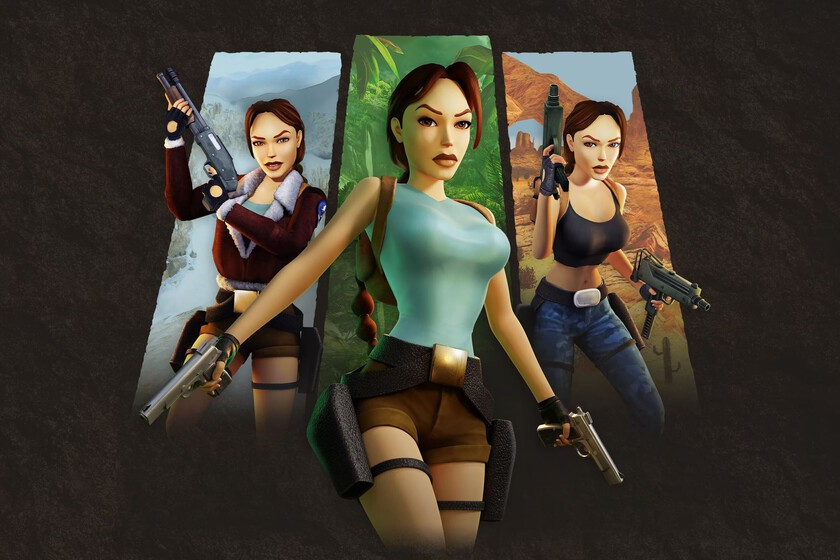

Jugabilidad

En la era moderna, los desarrolladores han encontrado formas
creativas e innovadoras de revivir aquellos juegos que marcaron la infancia y adolescencia de una generación. Una de las
más populares son los remakes, recreaciones completas de títulos
clásicos desde cero aprovechando el hardware y los motores gráficos
actuales. Grandes éxitos como Resident Evil 2, Final Fantasy VII e
incluso títulos más recientes como Shadow of the Colossus han sido
reimaginados con gráficos impresionantes y controles modernizados,
cautivando tanto a viejos fans como a nuevas audiencias.
Por otro lado, los remasters suponen una vía más directa para
disfrutar los clásicos con mejoras visuales y de rendimiento. Compañías como Activision, Capcom y Square Enix han remasterizado numerosos títulos populares, desde colosos como Crash
Bandicoot hasta joyas de culto como Okami, permitiendo
que estas obras envejecidas conserven su esencia intacta
en las plataformas modernas
Además de las actualizaciones directas, las réplicas miniaturizadas de consolas clásicas como
la NES y la Mega Drive han permitido a millones revivir la experiencia de jugar con el
hardware original, recreando fielmente aquellos diseños icónicos y
ofreciendo bibliotecas preinstaladas de juegos legendarios. Compañías como Nintendo, Sony y Sega se han sumado con entusiasmo a
esta tendencia de la nostalgia.
En el ámbito digital, servicios como la Consola Virtual de Nintendo, el PlayStation Store y plataformas como Steam han facilitado
el acceso a extensas bibliotecas de juegos retro directamente a los
dispositivos modernos.
Muchos de estos títulos han sido optimizados para
ejecutarse sin problemas, mien t ras que otros se
ofrecen tal cual, píxeles y todo, para una
experiencia auténtica.Mientras que
algunos desarrolladores han adoptado
oficialmente estas soluciones, una
gran comunidad de fanáticos se ha encargado de
mantener vivo el legado
de innumerables juegos
a través de proyectos sin
ánimo de lucro.
El efecto de la nostalgia en los videojuegos
La nostalgia juega un papel fundamental en el atractivo
perdurable de los videojuegos retro. Para aquellos que
crecieron jugando a esos títulos clásicos, revivir esas experiencias que marcaron su infancia y adolescencia es
una propuesta irresistible.
Que las personas puedan recordar esas tardes interminables frente a la televisión, aprendiendo de memoria
cada recodo de Green Hill Zone en Sonic o
cada patrón de enemigos en Contra, es un viaje al pasado que evoca emociones profundas y
recuerdos imborrables.
Pero la nostalgia por los videojuegos retro
va mucho más allá de los propios juegos. Es un
sentimiento especial por una época, un estilo
de vida y una forma de entretenimiento más
simple e inocente. Esos momentos compartidos con hermanos, amigos y familiares alrededor de una consola crearon lazos y tradiciones
que aún perduran. El diseño industrial icónico
de máquinas como la NES o la Mega Drive encapsulan
el espíritu de aquellos años de forma inconfundible.
Incluso para quienes no vivieron esa época, los videojuegos retro ejercen un atractivo especial, precisamente por evocar un pasado idealizado. Una nueva
generación de jugadores se siente atraída por la estética
pixelada, la jugabilidad desafiante y las mecánicas sencillas pero adictivas de aquellos títulos. En un mundo
de juegos con gráficos realistas y
sistemas de juego complejos,
lo retro ofrece una refrescante
sencillez y un reto basado en la
destreza pura y la exploración
Preservar el legado de los
videojuegos clásicos es una tarea
importante que involucra a empresas, instituciones y comunidades de fans por igual
Impacto cultural y legado de los videojuegos retro
Los videojuegos retro han dejado una huella indeleble en la cultura popular que trasciende el propio medio.
Personajes como Mario, Link, Sonic, Pac-Man o Space Invaders se han convertido en iconos reconocibles a nivel
mundial, con una presencia que va más allá de los propios juegos.
Se extiende a la música, el cine, la moda y otras expresiones artísticas contemporáneas. Modernos éxitos musicales como líder por Bailey Zimmerman o videoclips como
Rendez-Vous de Amanda Lear rinden homenaje a la estética pixelada. Grandes películas como Pixels, Ready Player
One o El Gato con Botas: Último Deseo, incluyen referencias y escenas directamente inspiradas en los clásicos.
Cada vez más instituciones estudian los videojuegos
retro como piezas clave de la historia y la cultura. Universidades ofrecen cursos específicos, mientras que museos
como el Smithsonian de Estados Unidos o el Museo de la
Imagen en Movimiento de Nueva York han realizado exposiciones dedicadas a explorar su impacto y preservación.


Futuro de los videojuegos retro
A medida que se avanza, es probable que se vea una
mayor integración entre lo retro y lo moderno. Los desarrolladores continuarán explorando formas de rendir homenaje al pasado mientras aprovechan las últimas tecnologías.
La realidad virtual y aumentada podría permitirles sumergir los sentidos de los
jugadores en mundos
retro como nunca antes visto. Y las comunidades de fans seguirán
siendo guardianas de este
legado, asegurando que las
joyas del pasado nunca sean olvidadas. Los videojuegos retro son mucho más que un simple viaje al pasado.
Son un testimonio de cómo la creatividad y la pasión
pueden trascender el tiempo, cautivando a nuevas generaciones de jugadores y dejando una huella imborrable en la cultura.
A medida que la industria avance, la evolución de
estos juegos permitirá que se mantengan relevantes,
ofreciendo experiencias únicas que combinen la nostalgia con la modernidad. Gran parte del trabajo recae
en las comunidades de fans.
A través de páginas web y
grupos en redes sociales, millones de entusiastas comparten conocimientos, trucos, documentación y cualquier recurso disponible sobre sus juegos favoritos. Se
encargan de mantener viva la llama y transmitir su pasión a las nuevas generaciones.
Doom es un videojuego de disparos en primera persona presentado con gráficos en tercera dimensión. Si bien el entorno se muestra en una perspectiva 3D, los enemigos y objetos son sprites 2D representados en ángulos fijos, una técnica a veces denominada gráficos 2.5D o vallas publicitarias. En el modo de campaña para un jugador, se controla un marine espacial sin nombre, más tarde denominado extraoficialmente «Doomguy», a través de bases militares en las lunas de Marte y en el infierno. Para terminar un nivel, se debe atravesar áreas laberínticas para llegar a una sala de salida marcada. Los niveles se agrupan en episodios con nombre, y el nivel final de cada uno se centra en una pelea contra un jefe.
Mientras se atraviesa los niveles, se debe luchar contra una variedad de enemigos, incluidos demonios y humanos no muertos poseídos. Suelen aparecer en grandes grupos. Los cinco niveles de dificultad ajustan la cantidad de enemigos y la cantidad de daño que causan, y se mueven más rápido de lo normal en el nivel de dificultad más difícil. Los monstruos tienen un comportamiento simple: se mueven hacia su oponente si lo ven o lo escuchan, y atacan mordiendo, arañando o usando habilidades mágicas como bolas de fuego.
Se debe gestionar los suministros de municiones, salud y armaduras mientras atraviesa los niveles.

Siendo honestos, es complicado que hoy en día veamos de la misma forma los juegos originales. Sin embargo, estos pueden ser muy disfrutables si los entendemos bajo su contexto y todo lo que representan. Hace años, Pokémon consiguió una hazaña casi inconcebible e incluso estuvo a punto de ser un fracaso comercial. Sin embargo, logró lo imposible y es la enorme multinacional que conocemos en la actualidad.
La llegada de Pokémon a Occidente fue increíble y no tuvo precedentes, ¿pero qué fue lo que creo este fenómeno? Hoy existen revistas, camisetas, anime, juegos de cartas, juguetes, cómics y prácticamente lo que se te ocurra con temática de Pokémon. El lema “Atraparlos a todos” se ha grabado en la mente de millones de personas, que ahora son fieles seguidores de la marca. Su capacidad de unir a las personas fue la clave, utilizando la colección, intercambio y comunicación como medio.
Pikachu ocupó el segundo lugar de la lista “The Best People of 1999“: Las mascota oficial de Pokémon logró colarse en la aclamada lista creada por la revista Time. ¡Únicamente la celebridad Ricky Martín consiguió colocarse por encima del pequeño ratón amarillo!

Series televisivas
El éxito del videojuego original llevar a la franquicia a otros medios de entretenimiento como fue la televisión y el cine. En la actualidad; existen un total de 24 series, contando también la saga “Crónicas Pokémon” que prácticamente es un conjunto de Ovas y especiales.
La primera serie televisiva nos cuenta la historia de Ash, un niño de 10 años que está listo para comenzar su viaje por la Región de Kanto para convertirse en entrenador. Está adaptación nos enseña por primera vez a Ash Ketchum, quién será el protagonista de la gran mayoría de adaptaciones futuras. Sin embargo, las cosas no serán sencillas para él, pues termina con un Pikachu en vez de uno de los 3 Pokémon iniciales que suelen tener los nuevos entrenadores de su región.
Por otro lado, la última serie televisiva es “Pokémon: Viajes Maestros“, donde tenemos un Ash más experimentado y acompañado de varios amigos y Pokémon que ha conocido durante su aventura. Su tarea es combatir y capturas Pokémon desde Kanto, hasta la nueva Región Galar. Durante este trayecto, Ash participa en la Serie Mundial de Coronación y se prepara para intentar hacerse con el título de Campeón Mundial.
Manga
Los años han permitido la creación de una enorme cantidad de mangas basados en la franquicia de Pokémon. Estos mangas suelen salir en Japón por Shogakukan, para posteriormente ser traducidos al inglés por VIZ media, y terminar siendo adaptados al Español por Toukan Manga u otras agencias especializadas en traducción.
